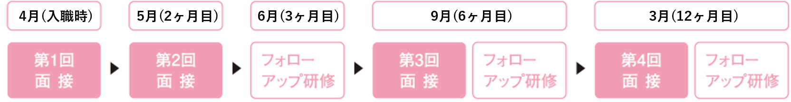

看護部
Nurse【看護部長挨拶】
副病院長 兼 看護部長
後藤 明子
- ・認定看護管理者
- ・キャリアコンサルタント
- ・産業カウンセラー
- ・認定看護管理者
- ・キャリアコンサルタント
- ・産業カウンセラー
高度医療を実践できる専門性の高い看護師の育成
小倉記念病院は常に変化する医療現場で高度急性期を担っており、地域の方々からも安心安全で質の高い医療・看護の提供を期待されております。看護部の理念である「高い技術と優しい心の看護の推進」のなかには「ひとを大切にする心を醸成する」という意味が含まれております。看護職員一人ひとりが、日々の業務を通じて「ひと」を大切にし、温かく接することが、自分にも温かさをもたらし、周りにも大きな輪となって地域にも広がることを願っています。さらに、安心して医療を受けられる環境を整えるためには、急性期を担う看護師として専門的な知識と技術を磨き、チーム医療を大切に自らの能力を最大限に発揮することが基盤となります。そのためにも、看護職員の職場環境を整え、高度医療を実践する看護師の育成にも尽力をしています。看護部理念を実現するために、看護師一同、一生懸命に取り組んでまいります。また、患者さん、ご家族、地域の皆さまと共に、よりよい医療・看護が提供できますよう努めてまいります。引き続き、温かいご支援とご協力を賜りますよう、心よりお願い申し上げます。
高い技術と優しい心の看護
【看護部理念】
- 看護知識の習得と看護技術の習得に努めます。
- 患者さんのプライバシーを尊重し、誠意ある対応に努めます。
- 患者さんのためにチーム医療の充実に努めます。
- 患者さんの療養環境を整備すると共に安全に努めます。
- 地域との連携を密にし、看護活動を通して地域への貢献に努めます。
 もどる
もどる http://192.168.111.140/recruit/kango-bu/images/img_main-03.jpg
http://192.168.111.140/recruit/kango-bu/images/img_main-03.jpg
新人さんの１年間・ローテーション研修・新採用者集中技術研修 (新人教育年間プログラム)
新人さんの１年間 (新採用者研修年間予定表はこちら)
| ～3月中旬 |
|
|---|---|
| 4月 |
|
| 5月 |
|
| 6月 |
|
|---|---|
| 7月 |
|
| 9月 |
|
| 10月 |
|
| 3月 |
|
新人ローテーション研修
新採用者が臨床現場をローテートし、基本的、総合的な看護の知識や技術を習得しています。
実施方法
- ●研修場所／配属部署に関連の部署
- ●研修時間／平日 ８:10〜17:00
- ●研修方法／１名ずつローテートする。
- ●研修期間／採用年の6月から翌年の3月までに随時研修
ローテーションの
一例
| １日目 | ２日目 | ３日目 | ４日目 | ５日目 |
|---|---|---|---|---|
| CCU | CCU | OP | OP | 心カテ |
実施方法
- ●研修場所／配属部署に関連の部署
- ●研修時間／平日 ８:10〜17:00
- ●研修方法／１名ずつローテートする。
- ●研修期間／採用年の6月から翌年の3月までに随時研修
ローテーションの一例
| １日目 | ２日目 | ３日目 | ４日目 | ５日目 |
|---|---|---|---|---|
| CCU | CCU | OP | OP | 心カテ |
集合技術研修
メンターシップ・プリセプターシップ
メンターシップ
経験豊富な上司による定期的な面接で精神面をサポート！
はじめて看護師として入職し、現場で業務を行うと、大きな緊張、悩み、ストレスなどに直面することになります。このような新人看護師に対して、仕事や社会経験が豊富な上司の定期的な面接を軸に、問題や悩みを聞き、現状改善や将来への道筋を一緒に考え、経験の浅い新人看護師にきめ細く心のサポートをします。
プリセプターシップ
新人一人ひとりに、固定した先輩看護師による臨床現場での支援。
プリセプターとは、新人ナースの成長を支援する人のことをいいます。当院は、支援をする者（プリセプター）と支援される者（プリセプティ）の１対１の関係を基本とし、新人の職場への適応能力を支援します。さらに、プリセプターを支援するアソシエイトナースとチームスタッフ全員でプリセプティを導いてくれるシステムとなっています。
クリニカルラダー制度 (kokura memorial ladder)
主な教育支援
主な教育支援
◯ 研修支援制度
・病院からの出張 年に１回の研修・学会参加の援助 （学会発表の場合は年に３回援助）・看護部親交会からの研修受講費用支援（研修支援規約に準ずる）
◯ サポートナースによる異動者における支援体制
異動者が新しい部署で求められる看護ができ、キャリアアップが図れるようにサポートナースを中心に支援を行う。
◯ 認定看護師資格取得支援制度
受講任命者（病院が募集する分野に対し、推薦基準に基づいた審査あり）に対して支援制度あり（支援規定に準ずる）
勤務環境
看護体制
一般病棟の看護師の配置は厚生労働省が定める最も手厚い看護基準を採用。さらに当院の医療提供体制にあわせ、7対1の看護体制の基準を上回る余裕のある看護師の配置です。
「休みがとりやすい」「夜から朝までの看護師が同じで、患者さんが安心する」などの利点があります。早出・遅出を組合せ、業務が集中する時間に手厚い配置を行い安全管理に努めています。
チーム
1病棟を2～3チームに分け、リーダーのもと、チームで継続性のある看護を実践しています。年間のチーム目標を立て、その達成に向けスタッフも成長しています。
年間30人程度が産休・育休制度を利用しています。産休の対象となる105日間は有給であることが当院の特徴です。
心身の健康・福祉の推進、家族等への慰労、自己啓発の場の提供など、職員の生活の充実を目的とした連続休暇の取得が可能です。また永年勤続者には勤続慰労休暇が与えられます。
勤務制度
育休明けのスムーズな職場復帰を支援するため短時間勤務制度を導入しています。